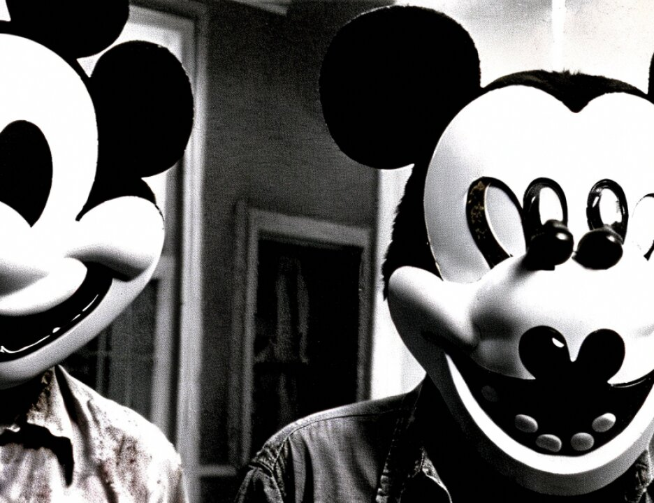

3630
142kbin3
Mutunga - direct
1 AFTERNOON SESSION
2 2:15 p.m.
3 THE COURT: We prepared a memorandum of the hearsay
4 issue, the bottom line of which is --
5 MR. WILFORD: Excuse me, your Honor. No one is here
6 for Mr. Al-'Owhali.
7 THE COURT: I will repeat it when he comes back. It
8 does not particularly concern Mr. Al-'Owhali. The bottom line
9 concludes that if the question is did Mr. Al-'Owhali mention
10 Mr. Odeh and the answer is no, that that is not precluded by
11 the hearsay rule, and also concludes that if the government on
12 redirect said did Mr. Al-'Owhali say anything about his
13 intention about disclosing all names that isn't precluded by
14 the hearsay rule, which depending on the precise language of
15 the questions and the answers -- the reason I am sharing the
16 memorandum with you is that maybe it suggests that a
17 stipulation would deal with it, both on what would be said on
18 direct and indirect, and why don't we take that up on
19 Wednesday.
20 GABRIEL MUTUNGA, resumed.
21 (Jury present)
22 THE COURT: Mr. Wilford, what is the next order of
23 business?
24 MR. FITZGERALD: Yes, one question I omitted to ask,
25 and I forgot again. Thank you.
SOUTHERN DISTRICT REPORTERS (212) 805-0300
3631
142kbin3
Mutunga - direct
1 DIRECT EXAMINATION continued
2 BY MR. FITZGERALD:
3 Q. Mr. Mutunga, when you put the items in your locked cabinet
4 on the night of the 14th, what other types of items were kept
5 in the cabinet?
6 A. Other cases but no more exhibits.
7 Q. Were there any more exhibits involving the bombing in that
8 cabinet?
9 A. No.
10 Q. Did any of your other cases involve bombings or
11 explosives?
12 A. No.
13 MR. FITZGERALD: Thank you. Nothing further.
14 CROSS-EXAMINATION
15 BY MR. RICCO:
16 Q. Good afternoon, Detective Mutunga. The day the bombing
17 happened in Kenya, August 7, 1998, did you respond to the
18 bombing site?
19 A. Yes, I did.
20 Q. And I take it that you, like many other people, helped out
21 at the scene.
22 A. Helped?
23 Q. Yes. Did you help?
24 A. No.
25 Q. Were you present at the bombing scene after it happened?
SOUTHERN DISTRICT REPORTERS (212) 805-0300
3632
142kbin3
Mutunga - cross
1 A. When it happened? Can you repeat again.
2 Q. Sure. Let me start all over. The day the bombing took
3 place was August 7, 1998, right?
4 A. Yes.
5 Q. You were a policeman on duty that day, weren't you?
6 A. I was on duty, yes.
7 Q. When the bombing happened, you went to the scene of the
1